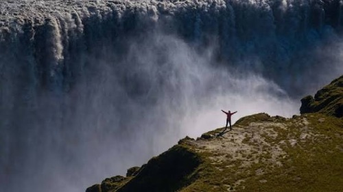
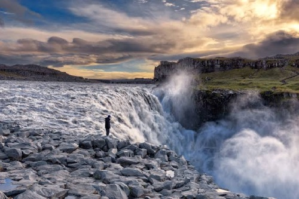
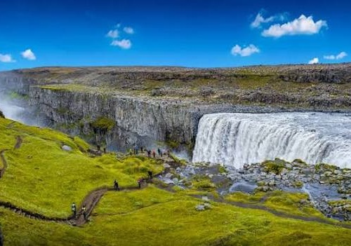
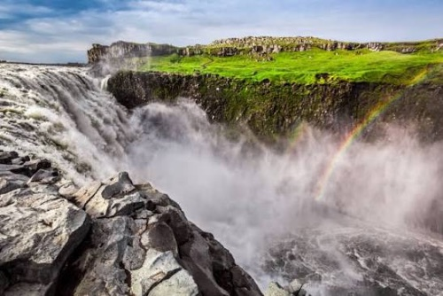

Dettifoss
Dettifoss er um 100 metra breiður og fellur um 44 metra niður í gljúfur og er staðsettur á Jökulsá á Fjöllum í Norðurausturhluta Íslands. Hann er sérstaklega áhrifamikill vegna þess hve mikið vatn rennur um fossinn. Dettifoss er einnig vinsæll ferðamannastaður og margir koma til að sjá fossinn og náttúruna í kringum hann. Það eru líka gönguleiðir að fossinum frá báðum hliðum Jökulsár á Fjöllum. Á sumrin er auðveldara að ganga að fossinum en á veturna getur verið miklu erfiðara vegna snjóa og ís.

Um Dettifoss
Dettifoss er stór og kraftmikill foss í Jökulsá á Fjöllum. Fossinn er þekktur fyrir mikið vatnsrennsli og sterkan kraft. Fossinn er umkringdur hrauni, klettum og djúpu gljúfri sem gerir svæðið mjög sérstakt. Vatnið úr fossinum kemur úr jöklinum Vatnajökli og rennur niður í Jökulsá á Fjöllum.



